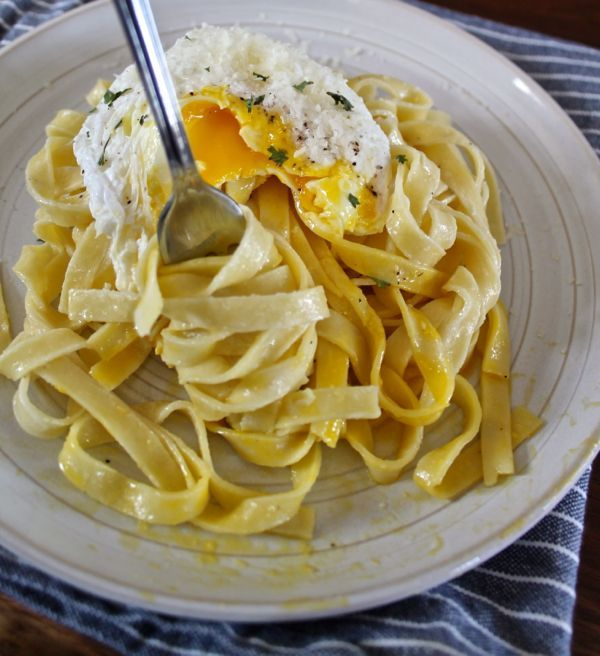

Comfort Pasta

Description:
This is an old recipe my great-grandma taught my mom when she was
growing up in Quebec. It's very easy, very cheap to make, and a great
comfort food for any day. Whenever I'm at odds with myself as to what
to make to eat, I always default to this. It's a very filling dish that
I, of course, had to spice up and add my own flair to.
Originally it was essentially pasta with oil, some light seasoning,
tomatos, and cheese. I decided to add my own preference of seasoning,
and add a poached egg or two on top. I did this originally because I
wanted to practise making poached eggs as I had never done so before,
and it just happened that it pairs wonderfully with the dish. If you cook
the egg medium or soft, cracking it open on top of the pasta lets the yolk
mix with the pasta creating a delicious sauce.
Ingredients:
- Spaghetti (or any pasta of your choice)
- Cherry Tomatos (or diced Roma)
- 2 Large Eggs
- Olive Oil
- Cheddar Cheese
- Chopped Green Onion
- Salt
- Pepper
- Basil
- Oregano
- Chili Flakes
- Garlic
- Paprika
- White Vinegar
Directions:
- Boil a large pot of water.
- While the water is coming to a boil, slice your cherry tomatos
in half (or dice your romas), then shred your cheese.
- Once your water is boiling, add a generous amount of salt. This
will help season the spaghetti and help prevent it from sticking
together. Add your spaghetti and stir it around a bit. Cook it al
dente.
- Once your spaghetti is done cooking, boil a fresh pot of water.
While it is coming to a boil, melt some butter in a pan over low heat.
Mince a generous amount of garlic cloves.
- Once the butter is melted, add the minced garlic and simmer for a few
minutes.
- Add your pasta to the pan and season generously with salt, pepper,
basil, oregano, and chili flakes.
- Add your chopped tomatos and some olive oil and mix around.
- Add a splash of white vinegar to your now boiing bot of water.
Reduce the heat to medium and, using a spoon, stir the water until you
have a mini whirlpool. Crack your two eggs into the water while it is
still spinning.
- Once cooked, remove your eggs and place on a paper towel. Dab until
dry.
- Add shredded cheese to the pasta, stir until mixed and melted.
- Place pasta in a bowl. Place your poached eggs on top and sprinkle with
salt, paprika, and green onions.